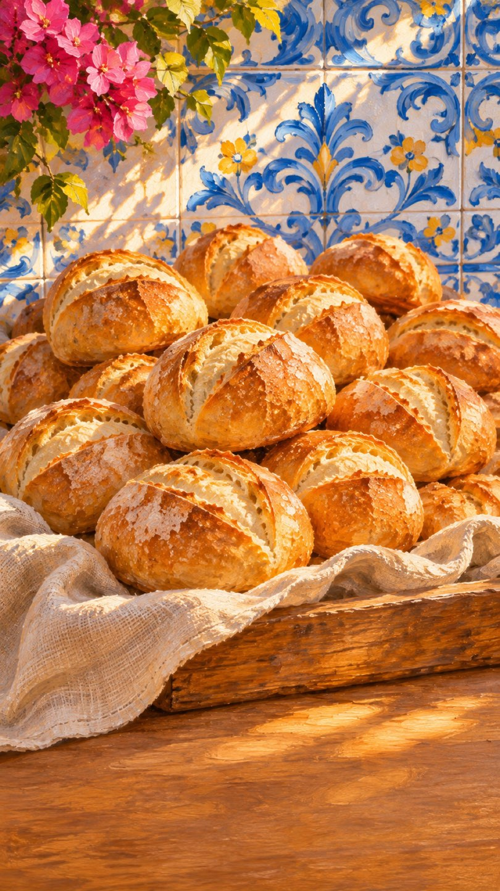
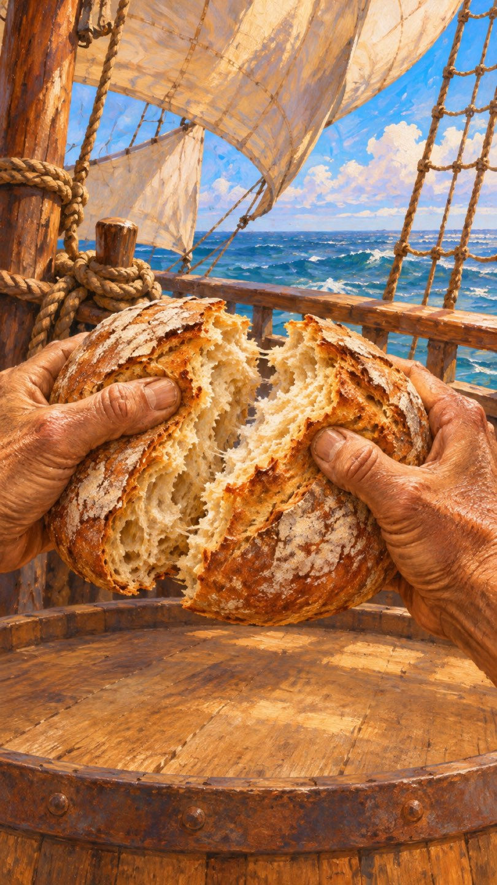
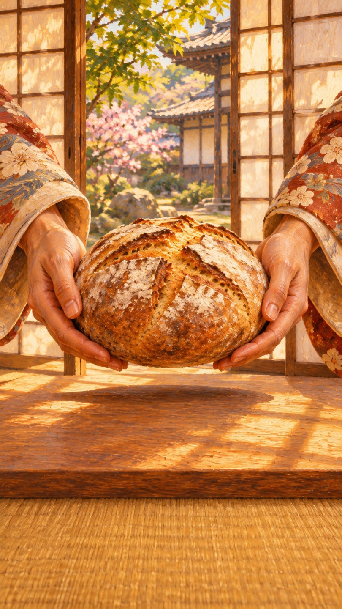
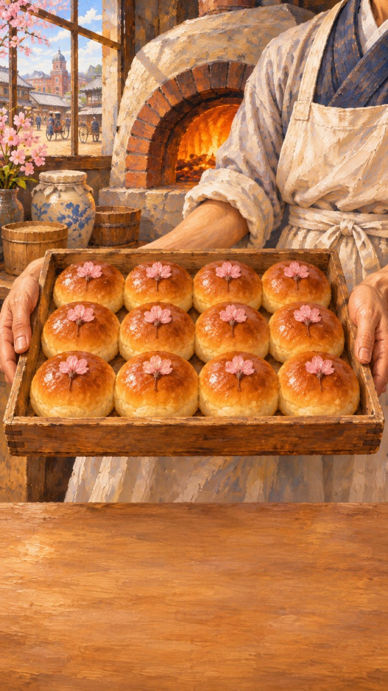
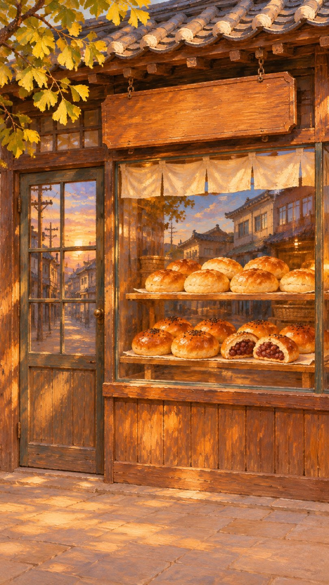

순례자의 한끼한밤
순례자의 한끼한밤매일 먹는 빵,
이 한 글자의 뿌리는 포르투갈이에요.
밥, 국, 김치처럼 '빵'도 너무 익숙해서 처음부터 우리말이었을 것 같죠. 그런데 포르투갈에선 지금도 빵을 빠웅(pão)이라고 불러요. 소리가 꽤 닮았어요.

한 단어가 바다를 건넌 길
1543년, 포르투갈 사람들이 처음 일본에 닿아요. 뒤이어 상인과 선교사들이 오갔고, 이때 빵도 같이 전해졌다는 설이 있어요.

일본 사람들은 낯선 말 '빠웅'을 자기들 발음으로 '팡(パン)'이라고 불렀어요.

그 뒤 일본에서 크리스트교가 금지되면서 빵 문화는 움츠러들었지만, '팡'이라는 말은 남았대요. 그리고 1874년, 도쿄의 한 빵집이 빵 속에 팥 앙금을 넣었어요. 단팥빵의 시작이에요.

일본어 '팡'을 거친 이 말이, 한국에선 '빵'이 됐대요. 언제 건너왔는지 딱 잘라 말할 기록은 없어서, 보통 구한말에서 일제강점기 사이로 봐요.

그러니까 편의점 단팥빵 하나에, 포르투갈과 일본과 한국이 다 들어 있는 셈이에요.
오늘 먹은 그 빵 한 글자에도,
포르투갈이 들어 있어요.
For pilgrims passing by
The Korean word for bread, "ppang", traces back to the Portuguese "pão". The Portuguese reached Japan in 1543, bread may have arrived with them, and the Japanese called it "pan". When Christianity was banned, bread culture faded, but the word survived. In 1874 a Tokyo bakery filled bread with sweet red bean paste, and the word later crossed to Korea and became "ppang".
참고한 자료
- '빵' ← 일본어 パン ← 포르투갈어 pão: 여러 자료가 일치합니다
- 한국에 들어온 정확한 연도는 기록이 없어 '구한말~일제강점기 사이'로 적었습니다
- 한경 생글생글, 주싱가포르 일본대사관 'Bread', Language Log 등
🕯️ 오늘 밤 이야기는 여기까지.
여러분이 오늘 먹은 빵은 무엇이었나요?